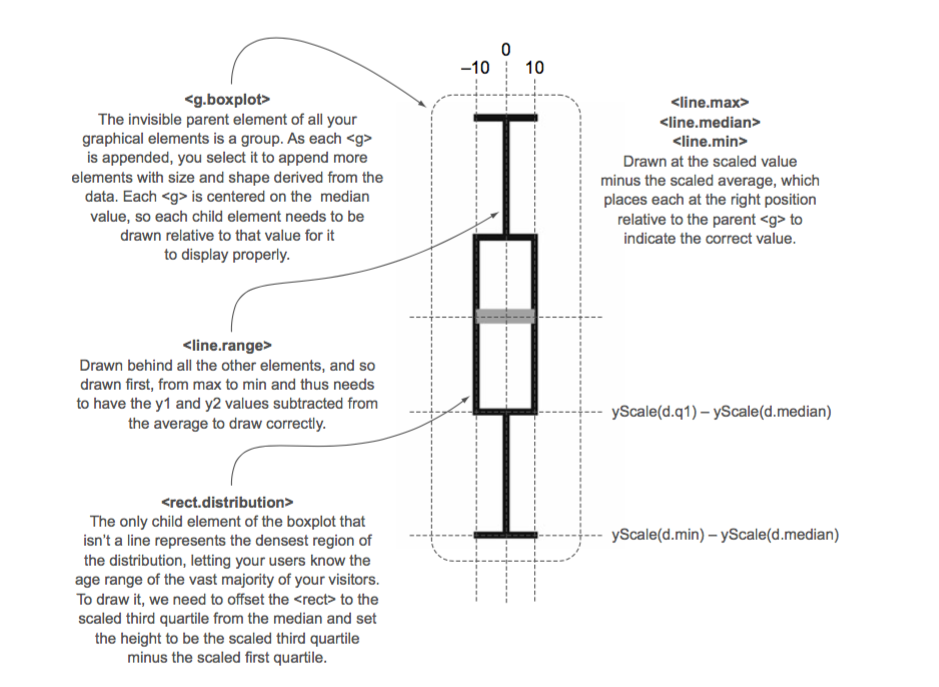

4.3 Complex graphical objects
// Information about visitor age for the site on Wednesday, such as,
// “Most visitors were between the ages of 18 and 28.
// The oldest was 40.
// The youngest was 15.
// The median age was 25.”
// It also allows you to quickly perform visual queries,
// checking to see if the median age of one day was within
// the majority of visitor ages of another day.
day,min,max,median,q1,q3,number
1,14,65,33,20,35,22
2,25,73,25,25,30,170
3,15,40,25,17,28,185
4,18,55,33,28,42,135
5,14,66,35,22,45,150
6,22,70,34,28,42,170
7,14,65,33,30,50,28
Figure 4.12 The median age of visitors (y-axis) by day of the week (x-axis) as represented by a scatterplot. It shows a slight dip in age on the second and third days.
Figure 4.13 The <rect> elements represent the scaled range of the first and third quartiles of visitor age. They're placed on top of a gray <circle> in each <g> element, which is placed on the chart at the median age. The rectangles are drawn, as per SVG convention, from the <g> down and to the right.
Figure 4.14 The <rect> elements are now properly placed so that their top and bottom correspond with the visitor age between the first and third quartiles of visitors for each day. The circles are completely covered, except for the second rectangle where the first quartile value is the same as the median age, and so we can see half the gray circle peeking out from underneath it.
Figure 4.15 How a boxplot can be drawn in D3. Pay particular attention to the relative positioning necessary to draw child elements of a <g>. The 0 positions for all elements are where the parent <g> has been placed, so that <line.max>, <rect.distribution>, and <line.range> all need to be drawn with an offset placing their top-left corner above this center, whereas <line.min> is drawn below the center and <line.median> has a 0 y-value, because our center is the median value.
Figure 4.16 Our final boxplot chart. Each day now shows not only the median age of visitors but also the range of visiting ages, allowing for a more extensive examination of the demographics of site visitorship.
d3.csv("../data/boxplot.csv", scatterplot)
var h = 500,
w = 500;
var margin = {top: 20, right: 30, bottom: 20, left: 10};
var width = w - margin.left - margin.right,
height = h - margin.top - margin.bottom;
function scatterplot(data) {
console.log(data[0].day);
// Max-min values
var xExtent = d3.extent(data, function(d) {return d.day});
// var yExtent = d3.extent(data, function(d) {return d.friends});
// Escales
var xScale = d3.scaleLinear().domain([1, xExtent[1]]).range([0,width]);
// Scale is inverted, so higher values are drawn higher up and lower values toward the bottom
var yScale = d3.scaleLinear().domain([0,80]).range([h-margin.top-margin.bottom, 0]);
// Axis
var yAxis = d3.axisRight(yScale).tickSize(width).ticks(8, "f").tickPadding(5);
var yAxisGrid = d3.axisRight(yScale).tickSize(width).ticks(16, "f").tickPadding(5);
// A negative tickSize draws the lines above the axis, but we
// need to make sure to offset the axis by the same value.
var xAxis = d3.axisBottom(xScale).tickSize(- height).ticks(7, "f" ).tickPadding(5);
var mySVG = d3.select("#viz")
.append("svg")
.attr("width", w)
.attr("height", h)
.append("g")
.attr("transform", "translate(" + margin.left + "," + margin.top + ")");
mySVG.append("g")
.attr("id", "xAxisG")
.call(xAxis);
d3.selectAll("#xAxisG")
.attr("transform","translate(0," + height + ")");
mySVG.append("g").attr("id", "yAxisGGrid").call(yAxisGrid);
mySVG.append("g").attr("id", "yAxisG").call(yAxis);
mySVG.selectAll("g.box")
.data(data)
.enter()
.append("g")
.attr("class", "box")
.attr("transform", function(d) {return "translate(" + xScale(d.day) +"," + yScale(d.median) + ")"})
// The d and i variables are declared in the .each() anonymous function,
// so each time we access it, we get the data bound to the original element.
.each(function(d,i) {
d3.select(this)
.append("line")
.attr("class", "range")
.attr("x1", 0)
.attr("x2", 0)
.attr("y1", yScale(d.max) - yScale(d.median))
.attr("y2", yScale(d.min) - yScale(d.median))
.style("stroke", "black")
.style("stroke-width", "2px");
d3.select(this)
.append("line")
.attr("class", "max")
.attr("x1", -10)
.attr("x2", 10)
// The top bar of the min-max line
.attr("y1", yScale(d.max) - yScale(d.median))
.attr("y2", yScale(d.max) - yScale(d.median))
.style("stroke", "black")
.style("stroke-width", "2px");
d3.select(this)
.append("line")
.attr("class", "min")
.attr("x1", -10)
.attr("x2", 10)
// The bottom bar of the min-max line
.attr("y1", yScale(d.min) - yScale(d.median))
.attr("y2", yScale(d.min) - yScale(d.median))
.style("stroke", "black")
.style("stroke-width", "2px");
// Because we’re inside the .each(), we can select(this) to append new child elements.
d3.select(this)
.append("rect")
.attr("width", 4)
// The rectangles are drawn, as per SVG convention, from the down and to the right.
// Sets a negative offset of half the width to center a rectangle horizontally
.attr("x", -2)
// The offset so that the rectangle is centered on the median value
.attr("y", yScale(d.q3) - yScale(d.median))
// The height of the rectangle is equal to the difference between its q1 and q3 values,
// which means we need to offset the rectangle by the difference between
// the middle of the rectangle (the median) and the high end of the distribution—q3.
.attr("height", yScale(d.q1) - yScale(d.q3))
.style("fill", "white")
.style("stroke", "black")
.style("stroke-width", "1px");
// Median line doesn’t need to be moved, because the parent is centered on the median value
d3.select(this)
.append("line")
.attr("x1", -10)
.attr("x2", 10)
.attr("y1", 0)
.attr("y2", 0)
.style("stroke", "darkgray")
.style("stroke-width", "4px");
});
mySVG.selectAll("circle.median")
.data(data)
.enter()
.append("circle")
.attr("class", "tweets")
.attr("r", function(d) {return d.number/10})
.attr("cx", function(d) {return xScale(d.day)})
.attr("cy", function(d) {return yScale(d.median)})
.style("opacity", .5);
}